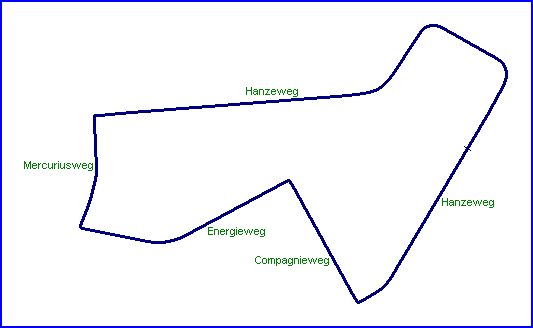

| Length | |
| Direction | Anticlockwise |
Contact Information |
|
| Address |
Stichting
Historische Motorsport Evenement |
| Telephone | +31 (0)342 491784 |
| Website | http://www.motorracebarneveld.nl |
Barneveld
Street Circuit for Historic Races

| Length | |
| Direction | Anticlockwise |
Contact Information |
|
| Address |
Stichting
Historische Motorsport Evenement |
| Telephone | +31 (0)342 491784 |
| Website | http://www.motorracebarneveld.nl |
racingcircuits.net - Lasted Updated: 19 June 2004 14:08:03 GMT Daylight Time
Data
Sources
Website - "Historisch Motorsport Evenement Barneveld";
http://www.motorracebarneveld.nl
email - from Roelard Smit on Tue 08/06/04 21:02